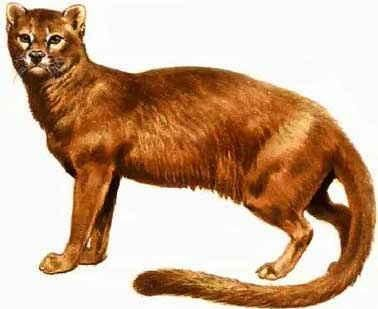

Evolución
¿Comó se llevo a cabo?
El ancestro común de los felinos modernos y extintos, el Proailurus lemanensis, data de hace unos 30 millones de años. Los grandes félidos parece que surgieron hace unos 10 millones de años, mientras que el género Felis (el del gato salvaje y doméstico), apareció el último, hace unos 3 millones de años.
Úiltmos reportes de la Evolución
Por último, existen autores que sitúan en Chipre la domesticación “real” del gato, ya que se han encontrado restos de un gato enterrado con signos de haber guardado un vínculo especial con humanos, con una antigüedad de 9500 años.
Etapas de su Evolución
Linaje Medio-Oriente
En donde una semi-domesticación o relación de mutuo provecho debió coincidir con el desarrollo de la a gricultura hace unos 12.000-10.000 años (el almacenamiento de grano atraía roedores que el hombre necesitaba controlar). Y de ahí se cree que el gato pasó a Europa hace unos 6000 años.
Linaje de Egipto
El linaje de Egipto donde la domesticación debió ocurrir entorno al 3.000 A.C y donde el gato adquirió una importancia religiosa notable. Este linaje sería el origen de la expansión de este animal r el Mediterráneo según otras fuentes, como las mencionadas por el grupo GEMFE (grupo de veterinarios especialistas en medicina felina), que explican que la expansión del gato por Europa fue un proceso lento que se debió básicamente a la invasión romana de Egipto y posterior romanización de otros territorios (entorno al 2000-1000 A.C.).